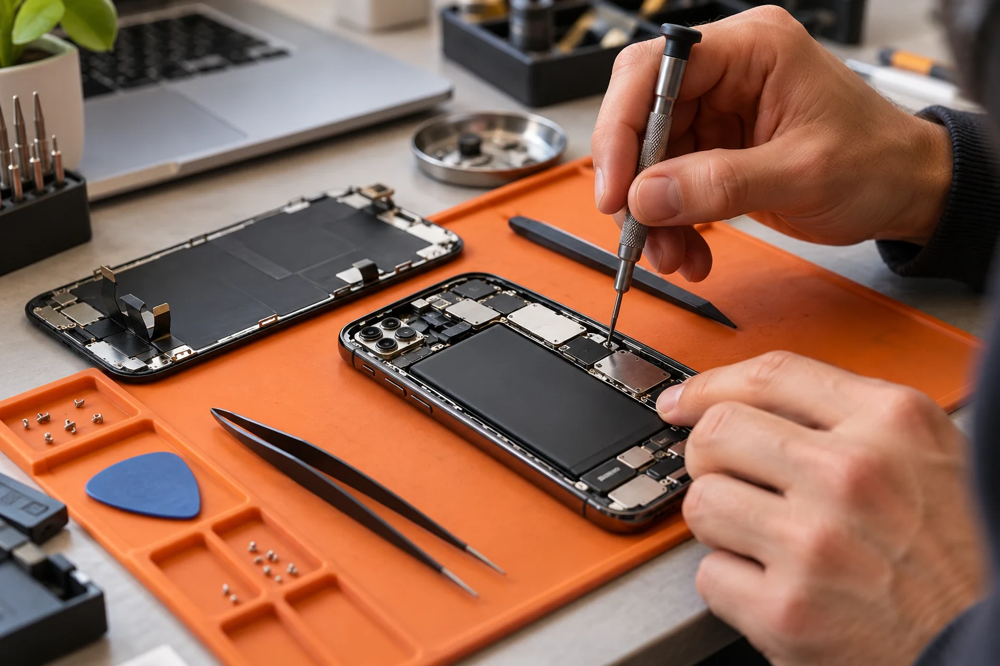

La tua tecnologia merita un'altra possibilità.
Smartphone e computer: riparazioni, assistenza e dispositivi ricondizionati. Una storia di cura, dentro e fuori il dispositivo.

Precisa.
Tangibile.
Vicina.
Dentro ogni soluzione,
c'è cura.
Poppins per la voce del marchio. Inter per informazioni e azioni. Il testo resta leggibile, selezionabile e separato dal film.
Il laboratorio
Diagnosi e assistenza per trovare la strada giusta per il tuo dispositivo.
Visual Story
Il guasto
Macro su un vetro incrinato. Luce radente, alluminio e una camera che si avvicina lentamente. Spazio a sinistra per la prima promessa.
Un'altra possibilità.
La tua tecnologia merita un'altra possibilità. Richiedi una riparazione.
Dentro
Il testo scompare. Il telefono resta solo, ruota e si apre in tre strati. La transizione occupa il suo spazio, senza anticipare la destinazione.
Solo il movimento.
Nessun testo: qui parla il dispositivo.
La cura
Avvicinamento ai componenti, riflessi arancioni e riassemblaggio dello stesso soggetto. Un dettaglio viene tenuto per lasciare leggere.
Dentro ogni soluzione, c'è cura.
Diagnosi e assistenza per trovare la strada giusta. Scopri il laboratorio.
Riparti
Il display integro si accende. La camera arretra, il telefono completo resta in scena e apre il percorso verso i prodotti del negozio.
Pronto per quello che viene dopo.
Ripara il tuo dispositivo o scegli il prossimo. Esplora il catalogo.
1,25 viewportDentro
1,75 viewportCura
1,5 viewportRiparti
1 viewport
Un palco fissato, scorrimento nativo e reversibile. Testi HTML con pause di lettura. Poi servizi, prodotti reali e contatti tornano nel flusso normale. Con movimento ridotto: poster e contenuti sempre disponibili.